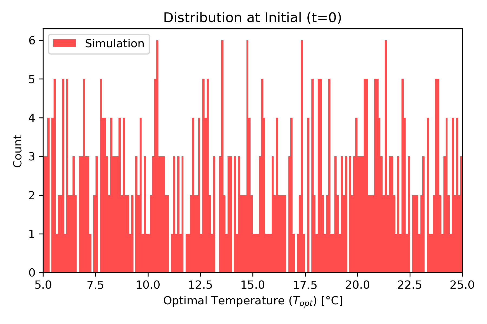
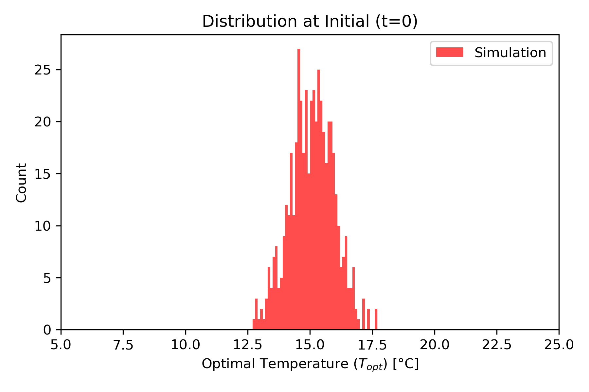
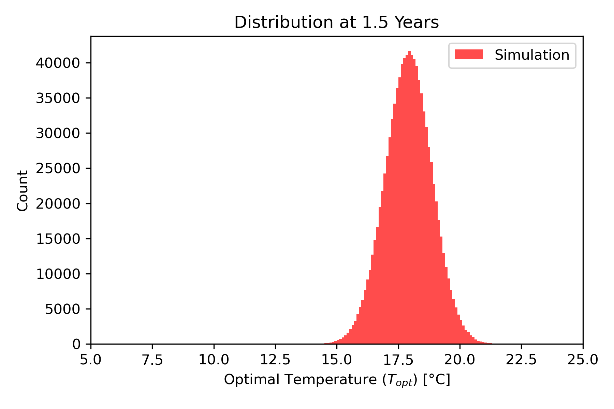
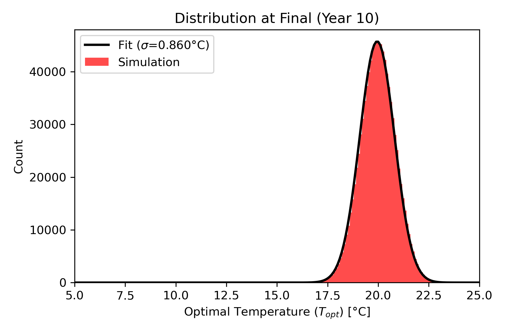
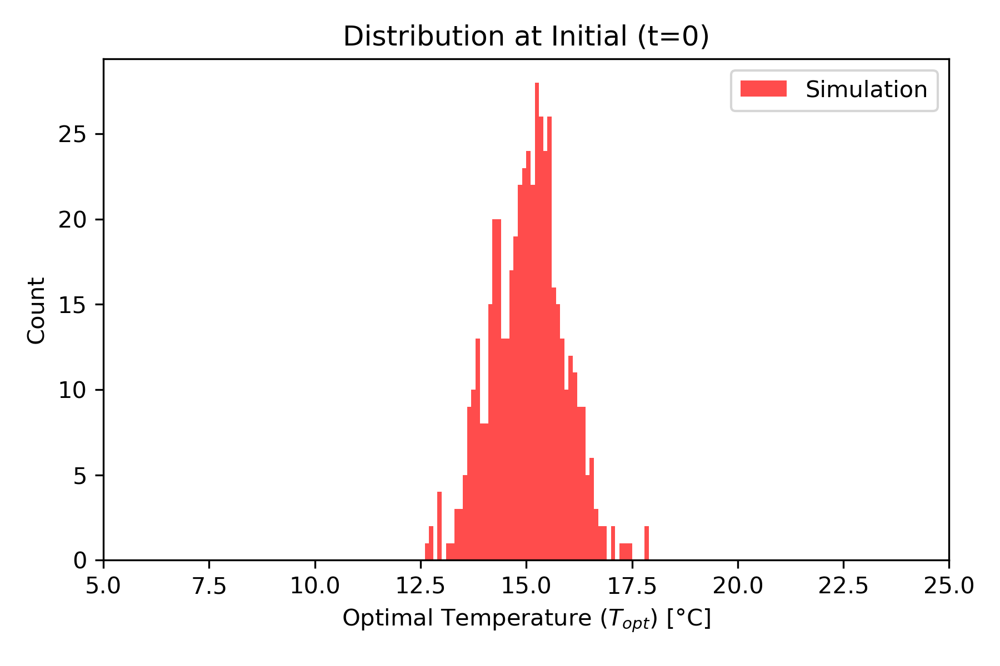
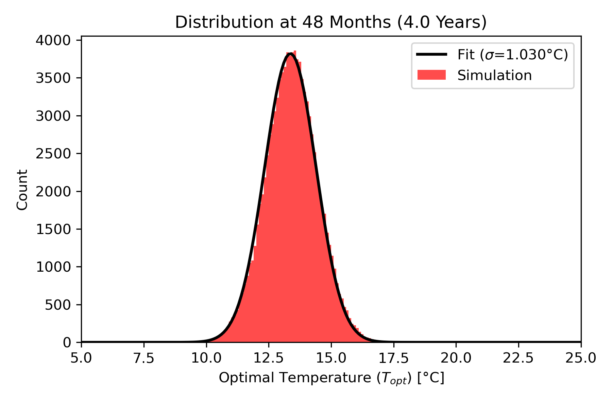
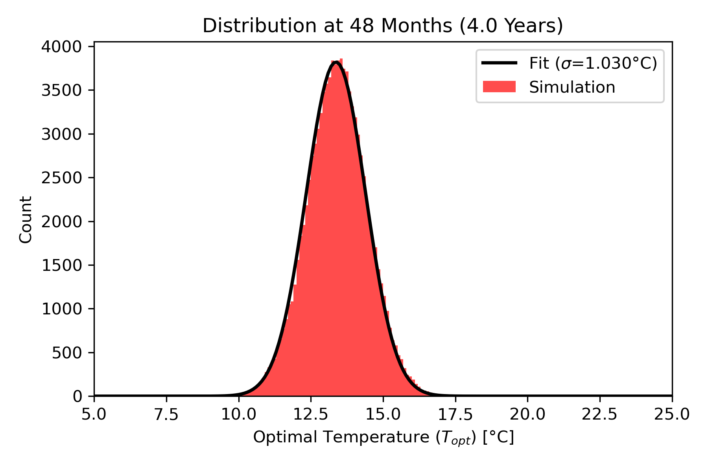
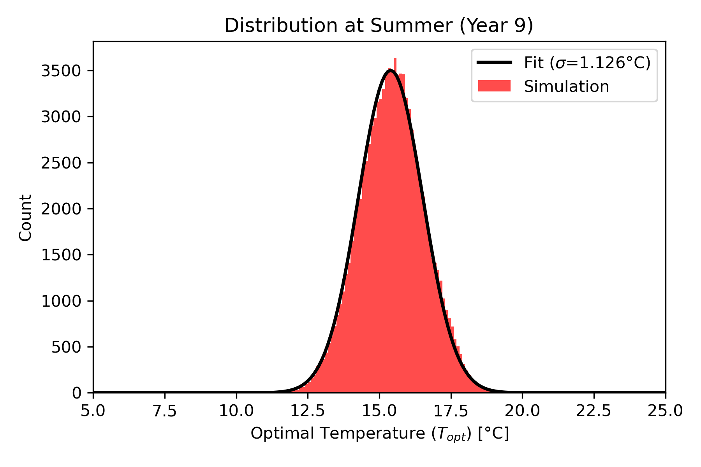
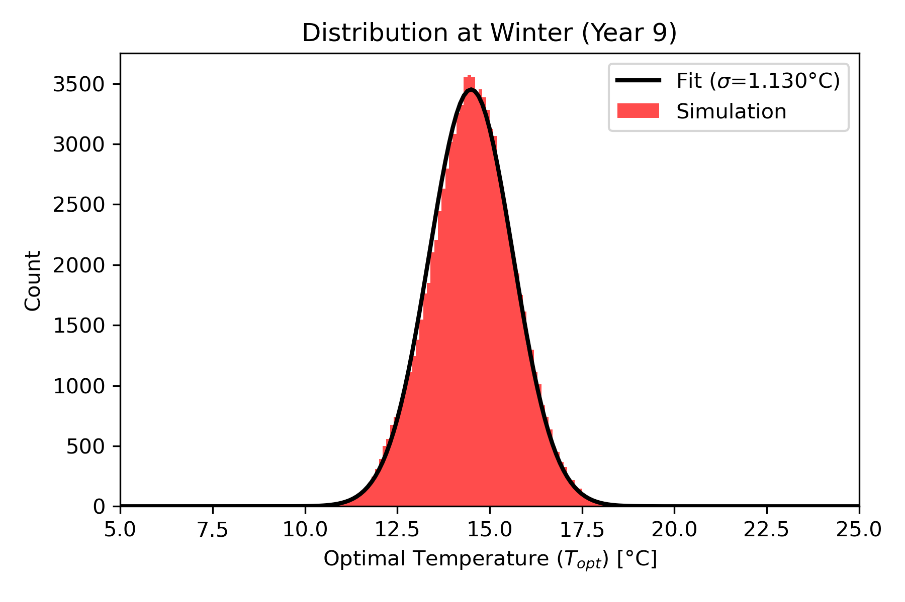

Reproduction of Beckmann et al. (2019) - Figure 2
Introduction
This document focuses on reproducing Figure 2 from Beckmann et al. (2019).
Figure 2 Description: “Temporal evolution of the distribution function of \(T_{opt}\) in a phytoplankton population that consists of \(10^6\) individuals in a case with constant temperature at 15°C obtained with MuSE-IBM. The left panel shows a distribution-evolution diagram over 5 years; the black line indicates the environmental temperature. The initial distribution is uniform over the range 5 to 25°C; after about three years, the distribution has converged to a steady state. The right panels show the distribution at three instances. The best fit Gaussian function of the steady state has a standard deviation of \(\sigma = 0.855^\circ\)C.”
Simulation Setup
- Agents: \(10^6\) (increased from standard run).
- Duration: 5 Years.
- Temperature: Constant 15°C.
- Initial Distribution: Uniform (5-25°C).
Results
We generate the plots using a dedicated Python script scripts/plot_fig2.py.
#| label: generate-plots
python3 scripts/plot_fig2.pyFigure 2 Comparison
We present the reproduced plots below.
1. Temporal Evolution (Left Panel)

2. Initial Distribution (t=0)

3. Intermediate Distribution (Year 1)

4. Final Distribution (Steady State)
.png)
Mass Balance Verification (Year 5)
| Component | Symbol | Benchmark (mmol N \(m^{-3}\)) | Model Result (mmol N \(m^{-3}\)) |
|---|---|---|---|
| Phytoplankton | \(P^*\) | ~3.56 | 3.55 |
| Detritus | \(D^*\) | ~1.425 | 1.42 |
| Nutrients | \(N^*\) | ~0.012 | 0.018 |
Reference Figure (Beckmann et al. 2019)

Figure 3: Sudden Temperature Change
Description: “In a second experiment, the environmental temperature is assumed to change abruptly from 15°C to 20°C after one year of simulation. The initial distribution of \(T_{opt}\) is assumed Gaussian (centered at 15°C). The population adapts to the new temperature over 7-8 years.”
Benchmarks: Before Simulation (Parameters)
| Parameter | Symbol | Unit | Beckmann et al. (2019) | Our Model |
|---|---|---|---|---|
| Initial Mean \(T_{opt}\) | - | °C | 15.0 | 15.0 |
| Initial Width \(\sigma\) | - | °C | ~0.86 | 0.862 |
| Temp Jump | \(\Delta T\) | °C | 15 \(\to\) 20 | 15 \(\to\) 20 (Year 1) |
| Mutation Range | \(\sigma_M\) | °C | 0.2 | 0.2 |
Benchmarks: After Simulation (Results)
| Metric | Symbol | Unit | Beckmann et al. (2019) | Our Model |
|---|---|---|---|---|
| Final Mean \(T_{opt}\) | - | °C | ~20.0 | ~20.0 |
| Final Width \(\sigma\) | - | °C | ~0.855 | 0.860 |
| Adaptation Time Scale | \(\tau\) | Months | ~15 | 7.4 |
| Total Adaptation Time | - | Years | 7-8 | ~4-5 |
Results
#| label: generate-plots-fig3
python3 scripts/plot_fig3.pyTemporal Evolution (Figure 3)

Initial Distribution (t=0)

Intermediate Distribution (1.5 Years)

Final Distribution (Steady State)

Reference Figure (Beckmann et al. 2019)

Figure 4: Seasonal Cycle
Description: “The environmental temperature varies sinusoidally between 10°C and 20°C with a period of 1 year. The mean temperature is 15°C.”
Results
#| label: generate-plots-fig4
python3 scripts/plot_fig4.pyTemporal Evolution (Figure 4)

Snapshots
  

Seasonal Extremes (Year 9)
 
Reference Figure (Beckmann et al. 2019)